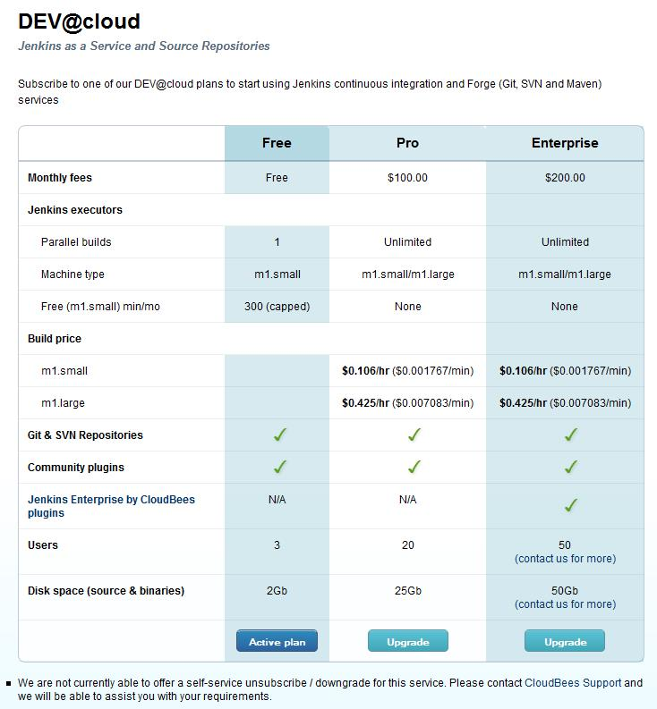
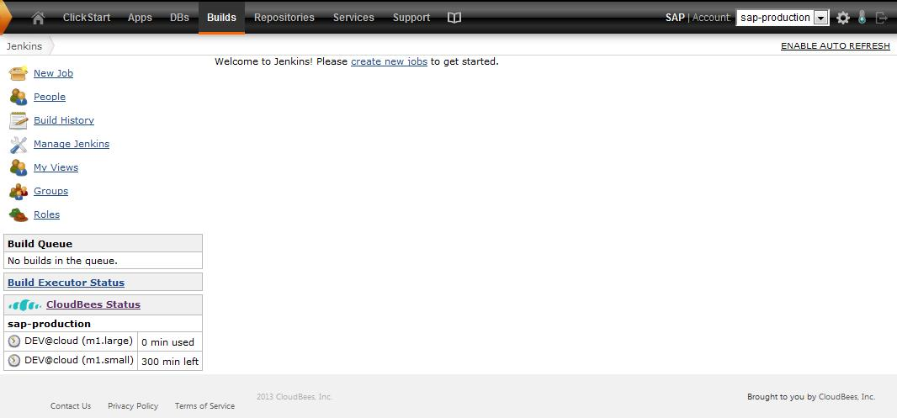
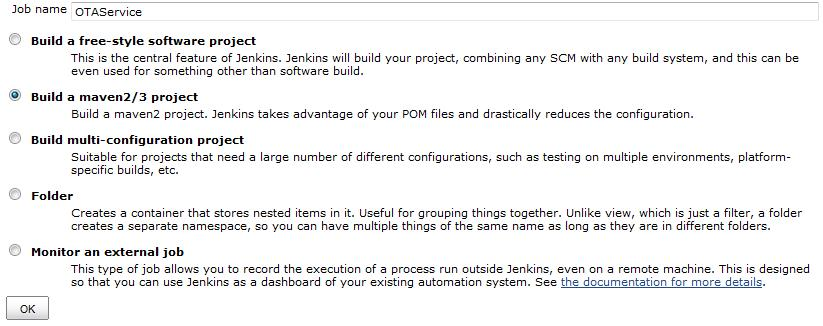
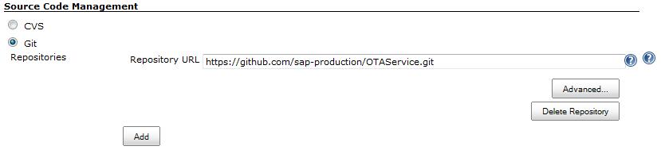
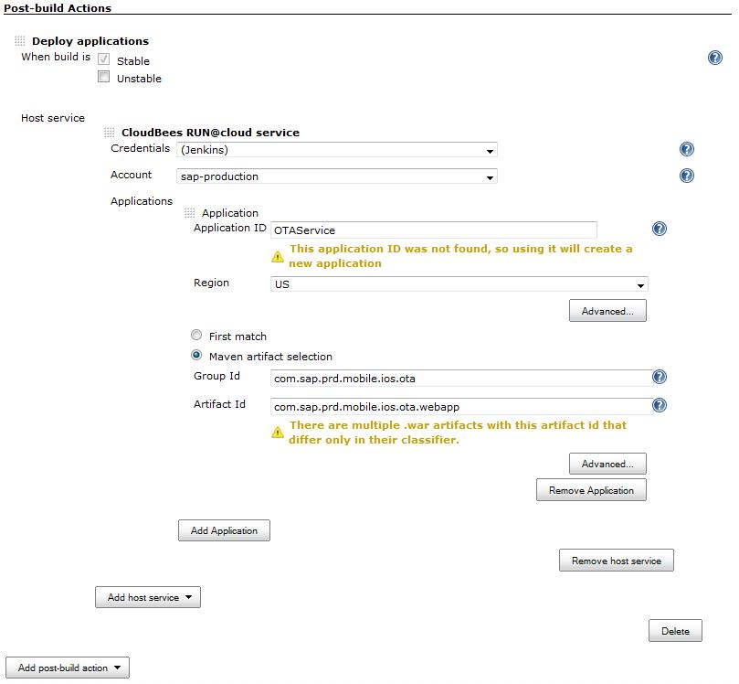
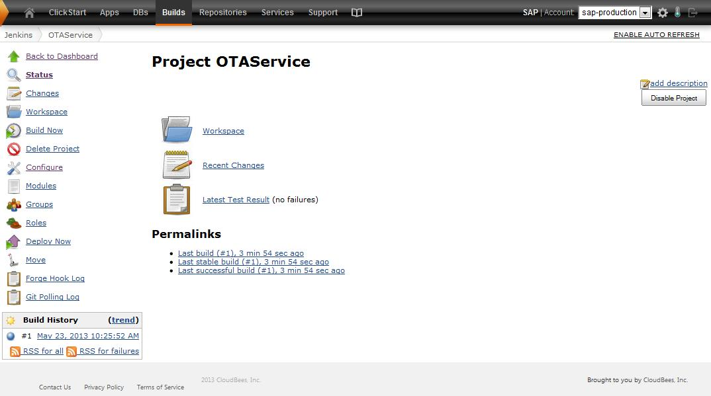
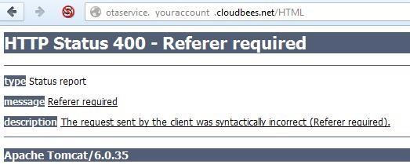

How to enable Over-The-Air Deployment
This is a step-by-step guide, describing how the Xcode-Maven-Plugin can support Over-The-Air (OTA) Deployment.
In Apples Documentation you find more information about
Over-The-Air Deployment in general.
Introduction
Besides the Xcode-Maven-Plugin we provide an OTA Service
(detailed information can be found on the project page).
This service is able to generate on-the-fly an install html page (henceforth referred to as install page) and
the manifest plist file (manifest plist) needed for OTA deployment, based on the provided parameters and the referer.
The Xcode-Maven-Plugin during the build generates an html page (henceforth referred to as iframe page) containing
an iframe being populated with the 'install page' generated by the specified OTA service.
By providing the IPA file and the 'iframe page', generated during the build, next to eachother on a web server users can access the 'iframe page' using their devices. For users it is transparent that the OTA service generates the 'install page' on the fly. By clicking the "install" button and confirming the dialog the App will be installed on the device.
Xcode-Maven-Plugin build configuration
Prerequisite
You already have an OTA Service deployed and running. The next chapter describes an example how to achieve this.
To enable the generation of the 'iframe page' you have to specify the "HTML" OTA Service URL (used by the generate-ota-html mojo) in the settings.xml, the pom.xml or as Java system property. E.g. -Dmios.ota-service.url=http://myserver:8080/ota-service/HTML
In our case we use a Hudson CI server to build our Xcode Apps. The generated IPA file and 'iframe page' are archived for each build and are accessible via http.
Testers can navigate to the build results, open the 'iframe page' and click the install link to install the IPA file of this build.

Since the artifacts are deployed to a central Maven repository it is also possible to find the 'iframe page' ("-ota.htm") artifact in Nexus, open it and install the IPA from the Maven repository.
It is even possible to copy the IPA and 'iframe page' to another server (e.g. an internal "App Catalog") - OTA Service always makes sure the IPA is installed from the location next to the 'iframe page'.

Hosting an OTA Service
Hosting an an OTA service is easy. All you need is a Java servlet engine (like Apache Tomcat) where you deploy the ota-service.war file:
- Install Tomcat
- Clone the OTA-Service project and build it . Or directly download the latest released war file from Maven Central.
- Copy the ota-service.war file from the target folder to the Tomcat/webapps folder and restart Tomcat
- Use the OTA-Service by specifying the mios.ota-service.url in the xcode-maven-build as described above (don't forget the /HTML - e.g. -Dmios.ota-service.url=http://myserver:8080/ota-service/HTML)
The OTA Service Documentation describes how to configure custom HTML templates.
Hosting OTA Service on Cloudbees
If you don't want to host an OTA Service on you own - here is an example how to host an OTA Service on Cloudbees in 5-10 minutes.
After registering a free Cloudbees Account you have to subscribe to some additional free services. Click Browse Ecosystem.

Subscribe to the free Jenkins DEV@cloud service

Click on Builds to access your Jenkins. Click on New Job to add a new job.

Give it a name and select Build a maven2/3 project.

As Git repository specify http://github.com/sap-production/OTAService.git and specify clean install as Maven build goals.
As Post-build Action add Deploy applications, specify a new application ID and the group- and artifact Id of the OTA Service webapp(com.sap.prd.mobile.ios.ota : com.sap.prd.mobile.ios.ota.webapp).
|  |

|  |
Save your job and trigger your first build.

In the console log you should see that the application was has been deployed to your Cloudbees application server.
[cloudbees-deployer] Deployed to application id youraccount/otaservice
[cloudbees-deployer] Can be accessed at http://otaservice.youraccount.us.cloudbees.net
You can test the OTA service by adding /HTML to the URL. It should display HTTP Status 400 - Referer required (since it only works from the HTML page generated during the xcode-maven-build).

Since it is not easily possible to configure the web application when it is running on Cloudbees we recommend to fork the OTA-Service project and customize the HTML template located in /modules/ota-library/src/main/resources/template.html.